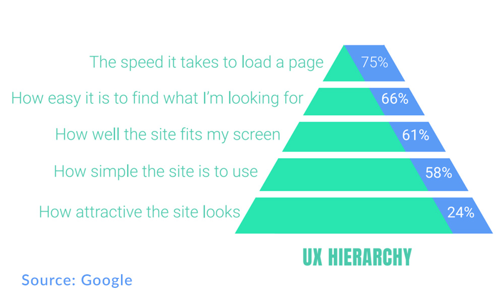

Beautyful should not mean slow
Performance is something we should care of because as all of us know time is very important for us so, now our user cant be with us if we are shipping them a poor and slow experience.
Improving performance is a journey. Small changes can often lead to big gains.
Allow me to know more
Yes, the power to know more. I very quired about many scientific things such as is time machine is true, can I build a Jarvis and so on. But until I pass my schooling I don’t have the opportunity to find these answers online. But when I get my first phone it is truing point of my life. Then I find some more interesting things like Artificial intelligence, Machine Learning, Internet Of Things, AR/VR, Cloud Computing, Quantum Computing and many more. But here one thing catch my all attention it is – “How it is possible I am typing a questing and it gives me an answer?” So here again I found some more terms like Google, Searching Engine, Web Browser, Website, and hacking.

Allow me to connect
Since I am online I never feel alone but this time not because the web is with me because expats of my industry are with me. The web allows me to connect those people those are doing great work to the community. It happens with me when I got a chance to attend Dev Fest-18. From here again I feel I am too slow. I can see the passion for technology at that time and how crazy people are. Here I interact with some people than I realize the benefit of a community.

If you are learning something then this is a plus point if you follow all experts of that technology because by doing this you get all updations and feedbacks from the community. If you follow good people that keep you always motivated and you get all great feed as fruit.